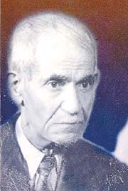

Abdülmecid Ünlükul (NURSî) 1884-1967

Bediüzzaman'ýn kardeþi, Ýþaratü'l-Ý'caz ve Mesnevi-i Nuriye'yi Arapça'dan Türkçe'ye çeviren mütercim.Abdülmecid, 1884 yýlýnda Bitlis'in Hizan Kazasýnýn Ýsparit nahiyesine baðlý Nurs köyünde doðdu. Ýlk eðitimini burada aldý. Nurs köyünden sonra Arvas'ta eðitimine devam etti. Buradan ayrýldýktan sonra (1900) Van'a gitti. Van'da kaldýðý on dört yýl, eðitim sürecinde ayrý bir öneme sahiptir. Buradaki Horhor Medresesinde aðabeyinin nezaretinde iki yüzü aþkýn talebe ile birlikte eðitimine devam etti. Özellikle Arap Dili ve Edebiyatý dalýnda çok büyük bir aþama katetti. Nitekim bu sebepten dolayýdýr ki, Bediüzzaman Ýþaratü'l-Ý'caz ve Mesnevi-i Nuriye eserlerinin Arapça'dan tercüme edilmesi iþini ona vermiþtir.
Abdülmecid, Birinci Dünya Savaþý'nýn baþlamasý ve Ruslardan cesaret alan Ermenilerin saldýrýlarý üzerine Bediüzzaman'ýn idaresinde savaþa katýldý. Bu savaþta Bediüzzaman Hazretleri yaralý olarak Ruslara esir düþerken, yeðeni Ubeyd þehit oldu. Bilindiði gibi Van ve çevresi Ruslarýn eline geçti. Þehir harabe haline geldiði gibi uzun süre eðitim gördükleri medreseleri de bu tahribattan nasibini aldý. Abdülmecid, Ruslarýn hücumundan ve istilasýndan kurtulan bazý akrabalarý ile birlikte Van'dan ayrýlarak Diyarbakýr üzerinden Þam'a gitti. Üç yýl burada kaldýktan sonra 1917 yýlýnda Diyarbakýr'a geri döndü.
Abdülmecid Diyarbakýr'da bulunan Askeri Rüþtiyede Arapça öðretmenliðini yaptý. Ancak bir süre sonra bu okulun kapanarak Erkek Sanat Enstitüsüne dönüþtürülmesinden sonra buradan da ayrýldý ve tekrar (1920) Van'a döndü. Van'da da öðretmenliðe devam etti. Bu kez yedi yýl burada kaldý (1920-27). Þeyh Said hadisesi ile baþlayan ve Bediüzzaman'ýn sürgün edilmesiyle neticelenen süreçten kendisi de nasibini aldý. Öðretmenlik görevinden alýnýnca Van'dan Ergani'ye geçti. Ergani'de bir manifatura dükkaný açarak hayatýný devam ettirdi. Bazen Camide fýkhi konularýn aðýrlýklý olduðu vaazlar verdi. 1936 yýlýna kadar Ergani'de yaþadýktan sonra çocuklarýnýn eðitimi sebebiyle Malatya'ya göç etti. Burada Cumhuriyet Çarþýsýnda (Eski adý Kürtler Çarþýsý) manifaturacýlýk yaptý. Örnek bir ticari ahlaka sahip olmasý kýsa zamanda çevresinin dikkatini çekti. Siftah ettikten sonra gelen müþterilerini henüz siftah yapmamýþ komþu esnafa göndermek suretiyle ticari ahlaka katkýda bulundu. Bu davranýþý çoðu kez tekrarladý. Hiçbir komþusunu incitmemesi, sempatik oluþu ve sürekli bir þekilde sohbetlerinde imani konulara aðýrlýk vermesi, etrafýndaki sevgi çemberinin giderek büyümesine sebep oldu. Malatya'da dört yýl kaldýktan sonra Ürgüp'e müftü olarak tayin edildi (1940).
Ürgüp'te on iki yýl müftülük yaptý. Burada acý-tatlý çok sayýda hadiseye tanýk oldu. Bediüzzaman'ýn kendisine tevdi ettiði eserlerinden Ýþaratü'l-Ý'caz ile Mesnevi-i Nuriye'yi Arapça'dan Türkçe'ye tercüme etti. Bu eserlerden talebelerine dersler okuttu. Diðer taraftan hayatýnda çok büyük iz býrakan evlat acýsýný burada tattý. Üniversitede okuyan ve gelmesini dört gözle beklediði oðlu Fuat'ýn vefat haberini burada aldý. Oysaki, köprü mevkiinde, Ankara'dan gelen kamyonlardan birinden oðlunun inmesini bekliyordu. Postayla ölüm haberini aldý. Oðlunun adýna kaleme aldýðý ve "Fuadiye" adýný verdiði eserinde acýsýný þöyle kaleme dökmüþtür:
Ey mezarcý! Göm beni de þu Fuad'ýn kabrine
Firkatýn dayanmaz vallahi asla kahrine.
Katýlsýn zerratýmýz, alem-i berzahta keza,
Sarýlsýn birbiriyle ruhlar, ilayevmi'l-ceza.
Ey mezarcý! Cebeci'de bana da kaz bir mezar,
Olalým ünlü Fuad'ýn komþusu leyl ü nehar.
Abdülmecid'in acýlarla dolu hayatý neredeyse vefatýna kadar devam etti. Yýllarda aðabeyi Bediüzzaman ile görüþemedi. Oðlu vefat etti. Yine çok sevdiði yeðeni Abdurrahman'ýn vefatý, diðer taraftan görevden alýnmalar sýkýntýlarýný arttýrdý. Bediüzzaman, kardeþinin yaþadýðý sýkýntýlý halet-i ruhiyeyi þu þekilde kaydetmiþtir:
"Kardeþim Abdülmecid, biraderzadem Abdurrahman'ýn (rahmetullahi aleyh) vefatý üzerine ve daha sair elîm ahvâlât içinde bir periþaniyet hissetmiþti. Hem, elimden gelmeyen mânevî himmet ve medet bekliyordu. Ben onunla muhabere etmiyordum. Birden bire, mühim birkaç Söz'ü ona gönderdim. O da mütalâa ettikten sonra yazýyor ki:
'Elhamdülillâh, kurtuldum. Çýldýracaktým. Bu Sözler'in her biri birer mürþid hükmüne geçti. Çendan bir mürþidden ayrýldým, fakat çok mürþidleri birden buldum, kurtuldum' diye yazýyordu. Ben baktým ki, hakikaten Abdülmecid güzel bir mesleðe girip, o eski vaziyetlerinden kurtulmuþ." (Mektubat, s. 342)
Abdülmecid, on iki yýl boyunca sürdürdüðü müftülük görevinden alýnýnca Ürgüp'ten ayrýlmak istedi. Ancak, sevenleri bir süre daha yanlarýnda kalmasý için ýsrar ettiler. Talebelerinin ve Ürgüplülerin ýsrarý üzerine üç yýl daha burada kaldý. Gerek müftülüðü sýrasýnda ve gerekse görevden alýndýktan sonra iman hizmetini devam ettirdi. Çok sayýda talebe yetiþtirdi. Her fýrsatta imani konularda çevresinde bulunanlarý aydýnlatmaya gayret sarf etti. Mantýk adlý eseri yazdýðý gibi, Haleb-i Saðir ve Kaside-i Bürde þerhini de kaleme aldý. Talebelerinden biri olan ve uzun süre vaizlik ve müftülük görevlerinde bulunan Mustafa Yýldýz, hocasý için þunlarý söylemektedir:
"... Hocamýz Abdülmecid Nursî'nin çabalarýyla açýlan Kur'an Kursu'nda talebe idim. Malumat-ý diniye derslerine geliyordu. Çok istifade ediyorduk. Beþeri münasebetleri fevkaledeydi. Herkesle görüþür, konuþur ve irtibat kurarlardý. Ben müftü iken herkesle (özellikle devlet memurlarýyla) irtibat kuramýyordum. O ise herkesle irtibat kurmuþ ve kendini sevdirmiþti." (Halil Uslu, Bediüzzaman'ýn Kardeþi Abdülmecid Nursî, Yeni Asya Neþriyat, Ýstanbul 1998, s. 62-63).
Abdülmecid, on beþ yýl Ürgüp'te kaldýktan sonra 1955 yýlýnda Konya'ya gitti. Buraya gelmesinin sebeplerinden bir tanesi kýzýnýn Konya Kýz Öðretmen Okuluna baþlamasýdýr. Buraya geldikten sonra büyük hasretini gidermek maksadýyla Isparta'ya giderek çok uzun zamandan beri ayrý düþtüðü Bediüzzaman Hazretlerini ziyaret edip, hasret giderdi. Bu ziyaret Bediüzzaman Hazretlerini de son derece sevindirdi.
Abdülmecid, Konya'ya geldikten bir süre sonra, Konya Ýmam Hatip Okulu Koruma Derneði idarecilerinin ve bazý hocalarýn daveti üzerine tekrar öðretmenliðe baþladý. Bu sýrada 74 yaþýnda olmasýna raðmen okula yaya olarak gidip geldi. Kendisi için bir araba tutmayý teklif etmelerine raðmen kabul etmedi. Derslerine aralýksýz devam etti. Öðrencilerinin yorulmamasý için oturarak ders vermelerini rica etmeleri üzerine; "Bu, helaket ve felaket asrýnda iman, Kur'an dersi almaya gelen, malumat-ý diniyeyi öðrenmeye koþan sizin gibi gençlerin karþýsýnda orutararak ders vermekten hicap duyuyorum ve bu hareketimle huzur duymaktayým. Ben vücudumun deðil, ruhumun rahat etmesini temine çalýþýyorum" þeklinde karþýlýk verir.
Konya Ýmam Hatip Okulu meslek dersleri öðretmenlerinden Mehmet Fatih Göktay, Abdülmecid için; "Bütün öðretmen ve talebelerle çok iyi geçinirdi. Bir hayli yaþlý olmalarýna raðmen gayet dinç idiler. Temizliðe çok dikkat ederlerdi. Sakal býrakmadýklarý için her gün traþlý olarak okula gelirlerdi. Hassas bir insandý. Gönül yýkan deðil, gönül yapandý" (Uslu, age., s. 77) ifadelerine yer vermektedir. Ders iþleme tarzý ile ilgili olarak da talebelerinden Süleyman Uður: "Derste soru sorulmasýný ve itiraz edilmesini pek severdi. Sual sorun, itiraz edin, cevap vereyim ki, takrir, takrib tamam olsun" dediðini nakletmektedir.
Öðretmenlik görevini sürdürmeye devam ederken sebepsiz yere tekrar görevden alýndý. Konya'ya yaþadýðý acý olaylardan bir tanesi de, Bediüzzaman'ýn Konya'ya gelmesine raðmen kendisiyle görüþmesine izin verilmemesidir. Bediüzzaman, vefatýndan önce bir kez daha Konya'ya geldiyse de bu sefer de uzun süre görüþmeleri mümkün olmadý. Zaten bu görüþme veda görüþmesi olup, evin önünde gerçekleþti. Bediüzzaman, arabadan inmeden kapýnýn önünde kardeþiyle vedalaþtý ve Urfa'ya doðru yola çýkacaðýný söyledi.
Abdülmecid'i en çok sarsan olaylarýn baþýnda kuþkusuz, Bediüzzaman'ýn ebedi istirahatgahýnda bile rahat býrakýlmamasý gelir. Vefatýndan birkaç ay geçtikten sonra, kendisine zorla imzalattýrýlan bir yazýya dayanýlarak Bediüzzaman'ýn kabri açýldý ve naaþý bir gece Urfa'daki mezarýndan alýndý. Abdülmecid'in, gözleri baðlý bir þekilde içinde bulunduðu bir uçakla taþýnan naaþ, bilinmeyen bir yere götürülerek defnedildi. Bediüzzaman'ý hayatta iken rahat býrakmayanlar, vefatýndan sonra da rahat býrakmamýþlardý.
Abdülmecid, 1967 yýlý geldiðinde herkes ile vedalaþmaya baþladý. Ona göre ölüm vakti gelmiþti. Çünkü, Bediüzzaman son buluþmalarýnda kardeþine, kendisinden yedi yýl sonra öleceðini söylemiþti. Abdülmecid, Bediüzzaman'ýn her söylediðinin gerçekleþtiðini müþahade edenlerden biri idi ve buna bütün kalbi ile inanýyordu. Nitekim de öyle oldu. 11 Haziran 1967 Cuma günü vefat etti. Kaderin garip bir cilvesidir ki, oðlu Fuat da 23 yýl evvel 9 Haziran 1944 Cuma günü vefat etmiþti.
Risâle-i Nur'a gönülden baðlý olan Abdülmecid, Mesnevi-i Nuriye'yi Arapça'dan Türkçe'ye çevirdikten sonraki duygularýný "Ýtizar" baþlýðý altýnda þu cümlelerle ifade etmiþtir: "Risâle-i Nur Külliyatý'ndan el-Mesneviyyü'l-Arabî ile muanven büyük Üstad'ýn cihanbaha pek kýymettar þu eserini de Allah'ýn avn ve inayetiyle Arabîden Türkçe'ye çevirmeye muvaffak olmakla kendimi bahtiyar addediyorum. Yalnýz, aslýndaki ulviyet, kuvvet ve cezaleti tercümede muhafaza edemedim. Evet, o cevher-baha hakikatlere zarf olacak ne bir harf ve ne bir lâfýz bulamadým. Tercüme lisaný da fikrim gibi nâkýs ve kasýr olduðundan, o azîm imanî ve cesîm Kur'ânî hakikatlere ancak böyle dar ve kýsa bir kisveyi tedarik edebildim. Ne hakkýn ve ne hakikatin hatýrý kalmýþ. Fabrika-i dimaðiyemin bozukluðundan, bu kadarýný da, müellif-i muhterem Bediüzzaman'ýn mânevî yardýmlarýyla dokuyabildim.
"Evet, bir tavuk, kendi uçuþuyla þahinin veya kartalýn uçuþlarýný taklit ve tercüme edemez. Bu, hakikaten aslýna uygun ve lâyýk bir tercüme deðildir-Pek kýsa bir meal, bazan da tayyedilmiþ, tercüme edememiþ. Çok yerlerde yalnýz mealini aldým. Bazý yerlerde de tayyettim. Ancak, aslýndaki hakaiki evlâd-ý vatana gösteren küçük bir aynadýr." (Mesnevi-i Nuriye, s. 9)